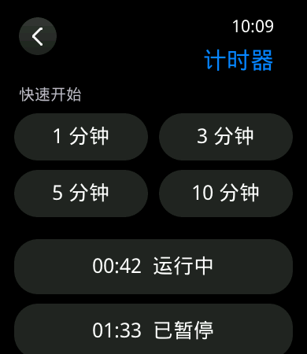
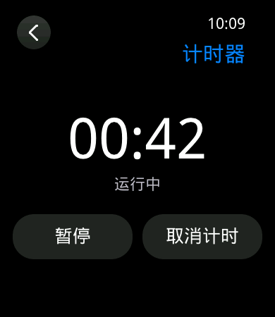
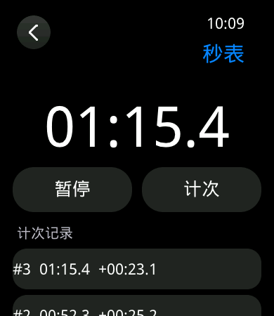

D11 计时器与秒表实施记录
1. 范围与边界
D11 实现 8 个并行计时器、1 个秒表和最多 100 条计次记录，打通固定容量核心、服务命令、版本化快照、应用入口和页面恢复。计时使用 64 位单调毫秒，不读取日历时间计算剩余值；RTC 校时不会改变运行或暂停中的计时器与秒表。
提醒页面、声音/振动互斥、16 个闹钟和 24 槽全局提醒队列属于 D12。D11 只保留计时器的 occurrence 与 alert_pending，证明到期只登记一次，不伪造完整提醒输出。重启连续性尚未启用持久化，因此冷启动后不承诺恢复活动计时。
2. 所有权与数据结构
| 模块 | 职责 | 约束 |
|---|---|---|
core/iw_chronograph | 纯 C 状态机；创建、推进、暂停、继续、取消、重启、秒表与计次。 | 8 个计时器和 100 圈全部静态分配；失败无副作用；ID、occurrence 和 revision 不回绕。 |
services/iw_service | 校验 32 B 命令、维护 48 B 结果账本、发布 TIMER/STOPWATCH 快照。 | 每轮先推进到期事件，再处理命令；页面退出不取消已受理命令。 |
services/iw_service_runtime | 单一服务线程每秒采样，命令到达时立即推进；提供只读诊断。 | 服务线程栈保持 4 KiB；硬件阻塞调用不放在模型锁内。 |
gui_core/platform | 应用列表、计时器列表/详情、秒表 View 与控制器。 | 页面只持快照和请求 token；业务状态由服务所有，重新进入从快照恢复。 |
3. 状态与并发语义
- 运行计时器的剩余值始终取
max(deadline_ms-now_ms, 0)，没有逐秒递减变量。 - 服务在处理 PAUSE/CANCEL 前先推进所有到期项；命令与截止时刻相同时，计时器先进入 EXPIRED，随后命令得到 STATE_CONFLICT。
- 暂停保存单调剩余值，继续时以新的单调时刻重建 deadline；日历和时区修改不参与计算。
- 到期只将一次 occurrence 标成 pending；重复推进不重复产生事件。RESTART 原子清除旧 pending 并分配新 occurrence。
- 秒表暂停时累计当前段；再次开始记录新的 segment_start。第 101 次计次返回 CAPACITY，已保存 100 圈及运行中的秒表均不改变。
4. 页面与资源
应用列表新增“计时器”和“秒表”真实入口。计时器列表提供 1、3、5、10 分钟快捷创建并列出活动实例；详情页按状态显示暂停、继续、取消或重新开始。秒表页显示十分之一秒、开始/暂停、计次/复位及最近 8 圈，完整 100 圈仍保存在服务快照中。
页面沿用 IW-VISUAL-2.0 的 390×450 安全区、Q0/Q1、正常/大字号和减弱动效。新增正式文案后，字体由 389 字符、65,752 B 更新为 406 字符、69,004 B，SHA-256 为 58fd17879dca9c8fb48af7bdff7896aecb8a8ef4671ed2cc01726803c554fb4d；仍低于 131,072 B 上限。
32 张同源静态帧及哈希覆盖应用入口、空/混合计时器、运行/暂停/结束详情、秒表运行/满 100 圈暂停，以及 Q0、Q1、大字号和减弱动效。帧由生产 View 主机软件渲染，不作为实屏、单调时钟精度或硬件性能证据。



5. 验证计划与当前结果
| 层级 | 覆盖 | 状态 |
|---|---|---|
| 主机核心 | T16 截止时刻与暂停/取消；RTC 无关；容量、饱和和失败无副作用；T17 后台到期及第 101 圈。 | 通过 |
| 主机 GUI | 新页面布局、字体、路由 ID 参数、1,000 轮生命周期、离页结果 ACK、退出后恢复。 | 通过 |
| GCC / Keil | 干净切换、身份、资源预算、布局及烧录 DryRun。 | 待本源码提交后执行 |
| 开发板 | 创建/暂停/继续/取消/重启、退出后到期、秒表计次、按键返回、20%/80%、内存回收。 | 待刷入复验 |
长文和输入性能继续由 Issue #8 跟踪；半黑半白显示异常继续由 Issue #10 跟踪。D11 不以二者已关闭作为前提，也不把未复现写成已修复。